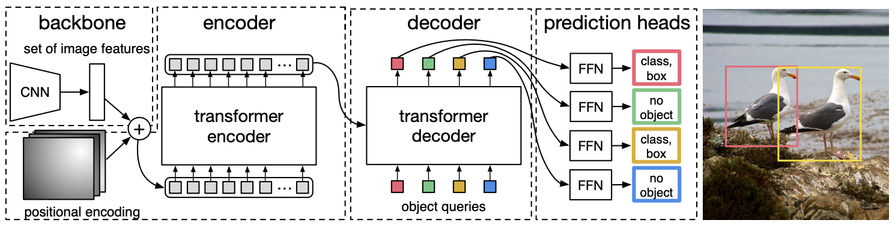

Introduction à la détection d’objets dans les images#
Nous avons vu précédemment que le traitement d’images regroupe trois grandes catégories :
La classification : Est ce qu’un objet est sur l’image ? (Est-ce une photo de chien ?)
La détection : Ou se situe un objet sur une image (si celui-ci est présent) ? (Quelle est la position du chien sur cette image ?)
La segmentation : Quels sont les pixels qui appartiennent à un objet ? (Quels sont précisement les pixels du chien sur l’image?)

Image extraite de ce site.
Dans le cours sur les CNN, nous avons vu des problèmes de classification avec une architecture de CNN classique qui se termine par une couche Fully Connected et nous avons également vu un problème de segmentation avec l’utilisation du modèle U-Net.
La tâche de détection étant un peu plus complexe à expliquer, ce cours est dédié à proposer une description des méthodes existantes et une description précise du modèle YOLO.
Dans cette introduction, nous allons d’abord expliquer les différences entre les deux principales catégories de détecteur :
Méthodes en deux étapes (Two-Stage Detectors) regroupant la famille des RCNN(Region-based Convolutional Neural Networks).
Méthodes en une étape (Single-Stage Detectors) regroupant la famille des YOLO(You Only Look Once).
Two-Stage Detectors#
Comme son nom l’indique, le two-stage detector a deux étapes dans la détection d’objets :
Une première étape de proposition de region (region proposal) qui genere des propositions de région où des objets d’intêret pourraient se trouver.
Une seconde étape consiste à affiner la détection, c’est à dire associer la classe de l’objet et spécifier la bounding box plus précisement (si un objet est bien présent).

Image extraite de l’article.
De manière générale, les two-stage detectors sont très précis et permettent des détections complexes mais sont assez lent et ne permettent pas le traîtement en temps réel.
Les réseaux two-stage les plus connus sont la famille des RCNN. Pour en savoir plus, je vous invite à consulter ce blogpost.
One-Stage Detectors#
Le one-stage detector ne nécessite qu’une seule étape pour générer les bounding box avec les labels correspondants. Le réseau divise l’image en une grille et pour chaque cellule de la grille, il va prédire plusieurs bounding box et leurs probabilités correspondantes.

Figure extraite de l’article.
Les one-stage detectors sont en général moins précis que les two-stage detectors mais ils sont beaucoup plus rapides et permettent un traitement en temps réel. C’est la famille de détecteurs la plus utilisée aujourd’hui.
Non-Maximum Suppression et Ancres#
NMS (Non-Maximum Supression)#
Lorsque l’on fait la détection d’objets avec notre modèle, l’architecture ne permet pas d’éviter que plusieurs bounding box se retrouvent sur le même objet (avec des positions qui se chevauchent). Avant de remonter les détections à l’utilisateur du modèle, on voudrait avoir une unique détection par objet de l’image et que ça soit la plus pertinente.
C’est là qu’intervient la non-maximum suppression, l’algorithme ne sera pas détaillé dans ce cours mais vous pouvez regarder les ressources suivantes pour entrer dans le détail : blogpost et site.

Ancres (Anchor boxes)#
Les ancres sont des bounding boxes prédéfinies placées sur une grille régulière qui recouvre l’image. Ces ancres peuvent avoir différents ratio (longueur/hauteur) et sont de taille variable pour couvrir le maximum de taille d’objets possible. Ces ancres permettent en fait de diminuer le nombre de positions à étudier pour le modèle. Ce que le modèle va prédire quand on utilise des ancres, c’est le décalage par rapport à l’ancre pré-générée et la probabilité d’appartenance à un objet.
Cette méthode a montré de bons résultats pour l’amélioration de la qualité des détections. Pour en savoir plus, vous pouvez consulter le blogpost.
En pratique, il y a souvent énormement d’ancres. La figure suivante montre 1% des ancres du modèle retinaNet :

Bonus : Detection d’objets avec l’architecture transformer#
Plus récemment, l’architecture du transformer a été adaptée pour la détection d’objets. Le modèle DETR propose une approche utilisant à la fois un modèle CNN pour l’extraction de caractéristiques visuelles. Ces features sont ensuite passées à travers un transformer encoder (avec l’ajout d’un positional embedding) pour déterminer les relations spatiales entre les caractèristiques grâce au mécanisme d’attention. Enfin, un transformer decoder (pas le même type de decoder qu’en NLP) prend en entrée la sortie de l’encoder (keys et values) et des embeddings de label d’objets (queries) ce qui va convertir les embeddings en prédiction. Finalement, une dernière couche linéaire va traîter la sortie du décodeur et prédire label et bounding box.
Si vous souhaitez en savoir plus, vous pouvez lire l’article ou lire ce blogpost.

Cette méthode présente de nombreux avantages :
Pas besoin de NMS, d’ancres ou de region proposal. Cela simplifie grandement l’architecture et le pipeline d’entraînement.
Le modèle a une compréhension globale de la scène plus poussée grâce au mécanisme d’attention.
Mais aussi quelques inconvénients :Les transformers sont assez gourmands en calcul donc ce modèle est moins rapide qu’un one-stage detector comme YOLO.
L’apprentissage est souvent plus long que pour un détecteur basé uniquement sur un CNN
Note : Les transformers utilisés dans le domaine de la vision ont souvent des temps d’entraînement supérieur à ceux des CNN. Une explication potentielle de cet écart est le biais des CNN qui fait qu’ils sont particulièrement bien adaptés aux images et ont donc besoin d’un temps d’entraînement plus court. Les transformers sont des modèles généralistes qui n’ont pas de biais et ils doivent donc apprendre depuis zéro.